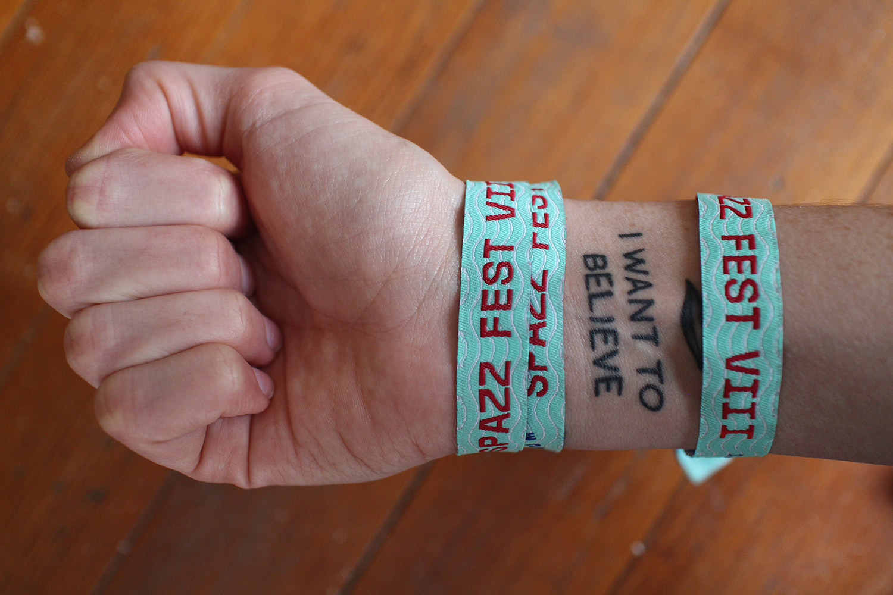
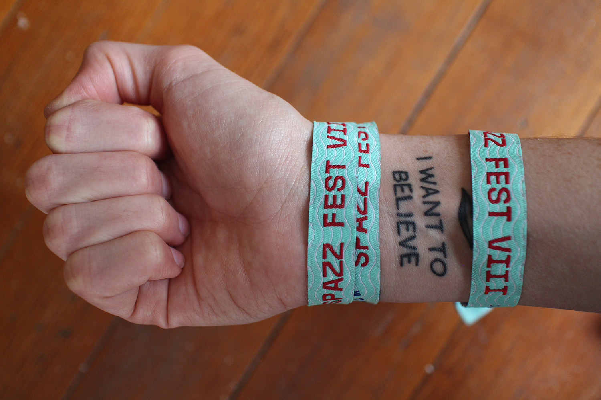

The Visual Identity Guidelines provide comprehensive direction for using the Colorado College logo in communications material. Download the guidelines.
Cornerstone Arts Week is a series of talks, screenings, performances, and exhibits that celebrates artistic collaboration around an annual theme.
Spazz Fest is a multi-day, multi-venue event honoring the integrity of Greenville, North Carolina's live music scene.
 

Blues Under the Bridge is the premier blues music festival in Colorado Springs.
Worked with the Inter-Faith Food Shuttle of North Carolina to design a food truck concept. During out of school times, the Mobile Tastiness Machine serves healthy meals to kids in low-resource neighborhoods. Meals are often paired with nutrition education and physical activities to engage in a fun learning experience. Learn more about the Mobile Tastiness Machine.
When Stewart Engineering merged with HadenStanziale, a leading land planning and design firm, it was time to reinvision the brand of the company. The work included naming concepts, logo and tagline development, a new color palette, website redesign, and branded collateral. Check out Stewart's website.

Branding, icon design, and interface design for an app that finds the fastest coffee shop wifi.

Various work for the band The Charming Youngsters. Listen to their music.

"Instilling some gratitude in our collective attitude." Existence Day is a human holiday focused on celebrating the splendor of the universe. Download the poster.
Rebel 51 is an art & literary competition, exhibition, and publication for East Carolina University. Publication won awards with the Associated Collegiate Press. Download the publication.
Alphabets designed with the help of scripts to generate random elements. Download the alphabets.
Hand-made art book inspired by the weirdness of self-help guides. Entire book unfolds to reveal one final message inspired by Anthony Burrill. Download the unfolded book.
Thanks for looking! Feel free to send me a message.